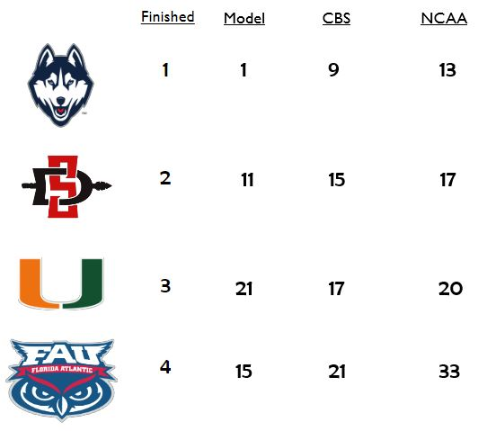
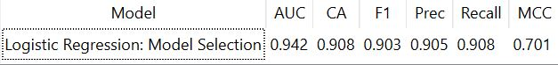

Data Wrangling
What makes the perfect football player?
About the project


For my data wrangling final project, we were tasked with finding two or more datasets and merging them in R and explore a problem we face in business or society. As an avid sports fan, I took it upon myself to look into professional football and how the size of players have changed as the game has evolved. There were three specific questions I wanted answers to, what is the perfect size for an NFL quarterback,which team has the most success in finding all-pro players, and finally have the top receivers in the league become smaller, shifiter players as the league and game have sped up. I built an R script to scrape the webpages and gathered my data from JT-SW collecting the rosters from the 2003 to 2019 season, and additionally gathered all pro results from each season from Pro Football Reference.
To the left is one of the measuers we were most proud of for our model. Our model actually had UConn as the number one team in the country heading into the tournament, much higher than the 4 seed the selection committee gave them. In addition to UConn, we had the rest of the Final Four teams graded out as underseeded by the selection committee and CBS, who is regarded as the best bracketology website. In addition to our model having these teams ratedd higher than they were, we also were proud of the teams on the bubble, where we feel the project thrives. Our model said that Wisconsin, North Texas, Utah Valley, and UAB should have made the tournament, but instead they all made the NIT. These four teams ended up making up the final four teams in the NIT tournament which we believe shows that they were undervalued by the selection committee, but not by our measures. In contrast to these four teams, the two schools that made the tournament that our model disagreed with were Nevada and Mississippi State. Like the aforementioned four teams, we believe our model was right as neither team won a game in their respective tournament runs.